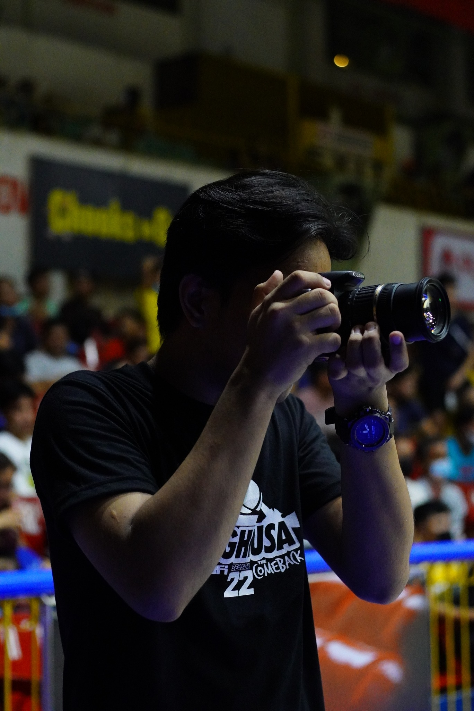
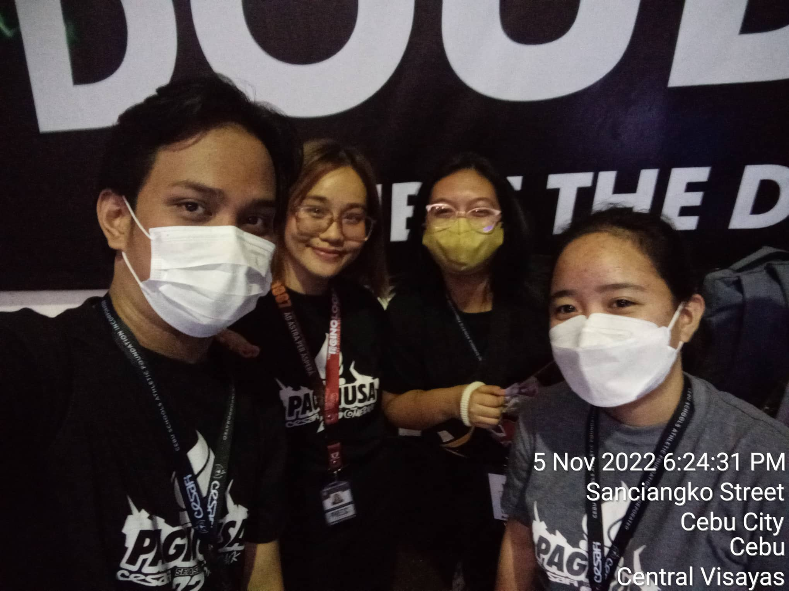
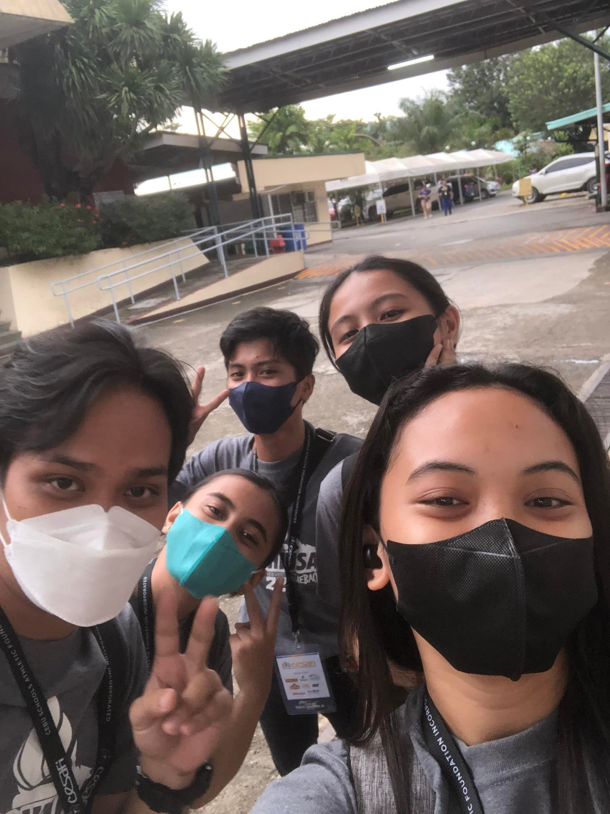
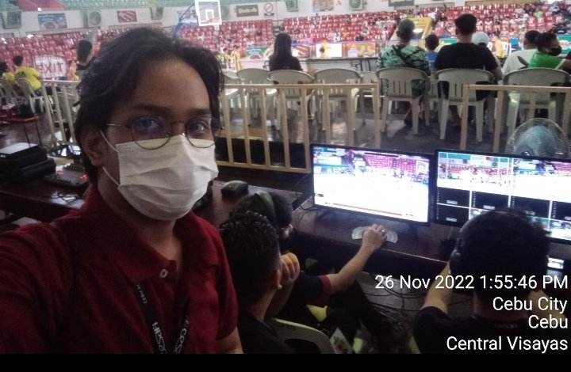
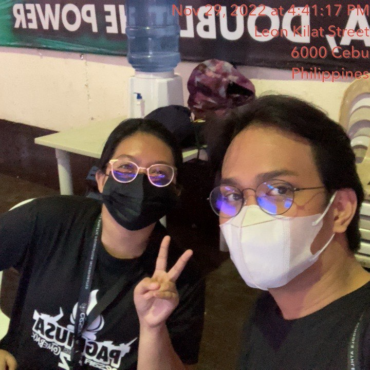
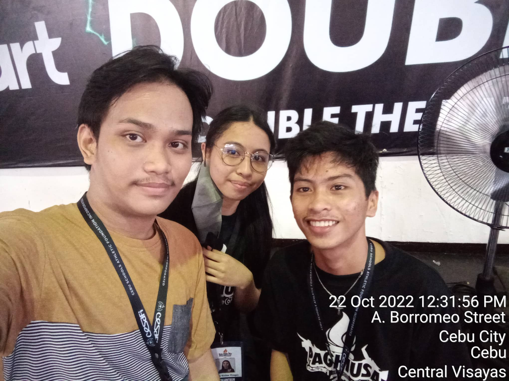

The Organization
CESAFI — the Cebu Schools Athletic Foundation Inc. — is the largest collegiate sports organization in Cebu, overseeing athletic competitions across dozens of member schools and thousands of student-athletes every season.
I joined as an OJT student during the 2022 athletic season, embedded across three teams: the design team, the live event production crew, and the marketing department. This experience put my Multimedia Arts background to full use across disciplines I rarely get to combine.

Leading Visual Direction
As the Lead Graphic Designer, I was responsible for the visual output that CESAFI put in front of thousands of fans, athletes, and partners across the entire season.
- Led visual direction and developed a cohesive branding system used across all league materials and game-day content.
- Directed fellow student designers, reviewing output and ensuring consistent, high-quality execution across digital platforms.
- Streamlined content production by building reusable asset templates and structured design workflows — reducing turnaround time on recurring deliverables.
- Produced game-day graphics, social media content, event posters, and print collateral throughout the season.
.jpg)
.png)

.png)


Live Event Coverage
Beyond design, I was part of the live production crew during game days — stationed on the floor alongside camera operators, switching technicians, and broadcast coordinators.
- Operated live cameras during CESAFI game broadcasts, capturing in-action footage under real-time event conditions.
- Assisted as a switcher operator — cutting between camera feeds during live coverage of games and ceremonies.
- Worked as the event photographer, documenting key moments, athlete portraits, and behind-the-scenes production for the season archive.






Sponsorship & Growth
I was also part of the marketing team, handling outreach to potential sponsors and building the materials needed to close partnerships for the season.
- Reached out to local and regional businesses on behalf of CESAFI to establish sponsorship partnerships.
- Created pitch decks and sponsorship proposals used in meetings with potential sponsors.
- Contributed to acquiring at least 10 sponsors for the 2022 CESAFI season.
What I Learned
CESAFI was one of the most demanding and rewarding OJT experiences I've had — because I wasn't limited to a single lane. Jumping between design, production, and marketing in a live events environment pushed me to be adaptive, fast, and communicative.
🎨 Systems thinking makes execution fast. Building reusable templates and structured workflows early on saved hours of repeated effort as the season scaled up.
🎥 Live production sharpens your composure. Operating cameras or the switcher during a live broadcast — where every second counts — taught me how to stay focused under real pressure.
📈 Selling an idea is a design problem. Crafting pitch decks that closed sponsorship deals showed me that persuasion through storytelling and visual clarity applies far beyond product design.
🤝 Cross-functional range is a competitive edge. Being able to hand off a design, then walk to the court and shoot event photography, then sit in on a sponsor call made me significantly more useful to the team.